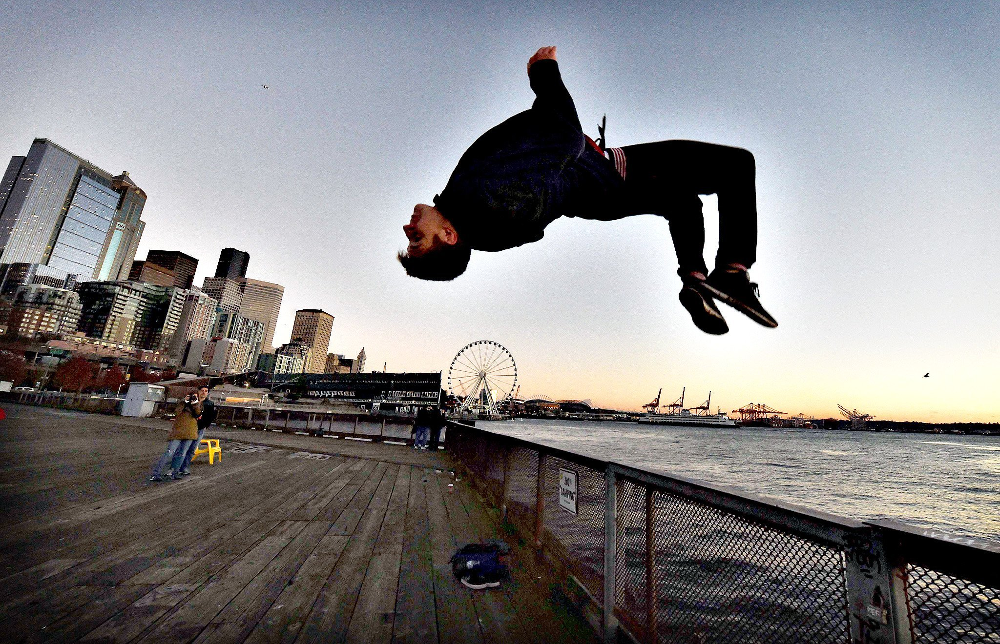

Christian Flores Parra
Estudiante en el Centro de Estudios Tecnológico e Industrial No.107, perteneciente a la carrera de programación y atleta independiente.
MIS PASIONES:

PARKOUR
El parkour es un deporte de origen francés, muy físico, en el que las personas que lo practican utilizan su cuerpo para superar los obstáculos urbanos que se encuentran a su paso realizando acrobacias.
DIBUJO
El dibujo es una de mis mayores pasiones, llegando a practicar y estudiar diversas técnicas de dibujo, como lo son: Acuarela, grafito, lápices de madera y colores pastel.
En mis dibujos intento plasmar mis gustos y mi manera de pensar.
TRICKING
El tricking es una de mis más recientes pasiones, es una disciplina de entrenamiento que combina patadas con giros y giros de gimnasia, así como muchos movimientos de baile y estilos de breakdance.